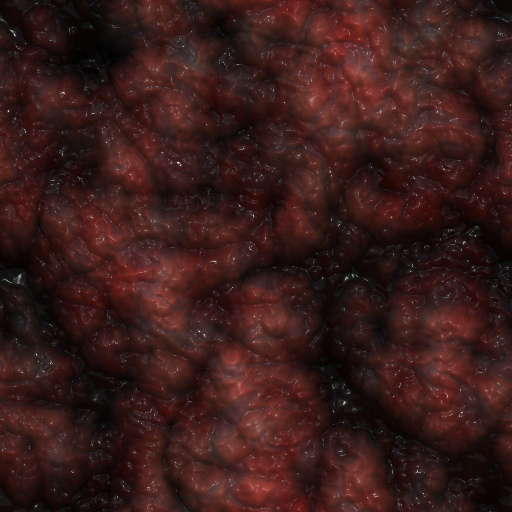

A-188
Class: Euclid
Risk: Significans
Description
188 is an ever-growing 'blanket' of mammalian flesh that idles at ~38C. 188 was first discovered in the [DATA EXPUNGED]
mountains in [DATA EXPUNGED]-1988, at around 216m by 724m. 188 appears to grow in colder environments, the only
known way to 'shrink' 188 is by heating it up to around 100C and pouring a mixture of sulfur and mercury on its surface.
Any physical contact with 188 will result in small spines on its surface injecting a potent neurotoxin(henceforth referred
to as 188-GAIA) into the subject's circulatory system/ 188-GAIA has shown to kill average humans in about two minutes and
incur rapid decomposition. Once a subject has been completely decomposed, 188 will move in to 'consume' the subject, growing
after 'consuming' the subject.
Though it was initially believed that 188 was incapable of growing without sustenance, this was proven wrong by a test conducted
by Dr. [DATA EXPUNGED]. When left unperturbed for prolonged periods of time, 188 begins to grow at about 1m² per day.
The only way to slow this unattended growth is throught the use of heat and the afforementioned sulfur-mercury mixture.
The organization has found that, through the use of enough heat and chemical mixtures, growth can be completely impeded.
(NOTE: The term 'blanket' was coined by one doctor [DATA EXPUNGED] upon discovery of 188, this term is not officially
organization sanctioned)
Containment protocol
188 is to be held in a 3m x 3m x 6m concrete heated cell. The cell is to constantly maintained at 200C with bi-weekly sprinklers
used to disperse a sulfur-mercury mix onto 188. Under NO circumstances are facility staff allowed to enter 188 cell. In the event
of a breach facility military staff are to attempt to recontain 188 through the use of flamethrowers and Molotov cocktails.
Experiments
11-03-1989: Three test subjects were forced into skin contact with 188, this resulted in the near-immediate paralyzation of
the subjects, quickly leading to brain-death. An autopsy revealed the presence of 188-GAIA within the subjects' blood.
05-22-1990: During a containment breach 188 was lit on fire by A-[DATA EXPUNGED] and showed signs of reduced growth.
07-09-1990: Upon testing flamethrowers, Molotov cocktails, dragon's breath, and flares: flamethrowers and Molotov cocktails
were found to be the most effective at impeding 188's growth.
01-22-1991: Through ceaseless and repetitive testing, a mixture of 82% sulfur, 18% mercury in liquid form was also found to
damage and impede 188's growth.

A close-up image of 188's surface
Return